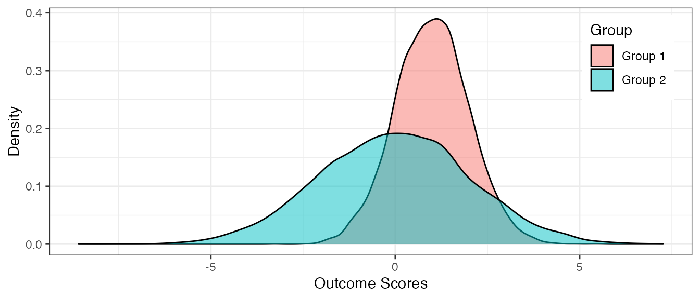

Simulation Workflow
simulation_workflow.RmdSimulation typically involve the following workflow (Morris, White, & Crowther, 2019):
- Create an experimental design.
- Generate a dataset.
- Run statistical methods on the dataset.
- Run steps 2 and 3 many times, then summarize the performance of the statistical methods and calculate MCSE.
- Repeat step 4 for every set of conditions in the experimental design.
- Evaluate the overall results.
The flowchart below depicts the workflow. The chart is created using grViz() from DiagrammeR package (Iannone, 2020).

The explanation of the workflow in this vignette follow notes from Dr. James Pustejovsky’s Data Analysis, Simulation and Programming in R course (Spring, 2019).
library(simhelpers)
library(dplyr)
library(tibble)
library(purrr)
library(tidyr)
library(knitr)
library(kableExtra)
library(broom)
library(ggplot2)Initial Experimental Design
Before we begin working on the simulation study, we should decide what model and design parameters we want to vary. Parameters can include sample size, proportion of missing data etc.
Data Generating Model
The data-generating function below takes in model parameters. For example, we can generate data varying the sample size or level of heteroskedasticity or the amount of missingness. Below is a skeleton of the data-generating function. The arguments are any data-generating parameters that we would want to vary.
Below is an example where we generate random normal data for two groups, where the second group has a standard deviation twice as large as that of the first group. The function takes in three arguments: n1, indicating sample size for Group 1, n2 indicating sample size for Group 1, and mean_diff, indicating the mean difference.
generate_dat <- function(n1, n2, mean_diff){
dat <- tibble(
y = c(rnorm(n = n1, mean_diff, 1), # mean diff as mean, sd 1
rnorm(n = n2, 0, 2)), # mean 0, sd 2
group = c(rep("Group 1", n1), rep("Group 2", n2))
)
return(dat)
}After creating the data-generating function, we should check whether it works. Below, we generate an example dataset with 10,000 people in each group and the mean_diff set to 1.
set.seed(2020143)
example_dat <- generate_dat(n1 = 10000, n2= 10000, mean_diff = 1)
example_dat %>%
head()
#> # A tibble: 6 x 2
#> y group
#> <dbl> <chr>
#> 1 0.491 Group 1
#> 2 -0.534 Group 1
#> 3 1.02 Group 1
#> 4 0.754 Group 1
#> 5 0.762 Group 1
#> 6 0.979 Group 1Below, we create a summary table. The mean of the outcome for Group 1 is close to 1 and the mean for Group 2 is close to 0. The standard deviation of the outcome for Group 1 is close to 1 and the standard deviation for Group 2 is close to 2. The table matches what we specified in the data-generating model.
example_dat %>%
group_by(group) %>%
summarize(n = n(),
M = mean(y),
SD = sd(y)) %>%
kable(digits = 3)| group | n | M | SD |
|---|---|---|---|
| Group 1 | 10000 | 0.998 | 0.996 |
| Group 2 | 10000 | -0.014 | 2.028 |
Below we create a density plot of the values that we generated for each of the groups. The distributions seem normal. The peaks seem to have a difference of 1. And, the variances of the outcome scores are different for each group as we specified.
ggplot(example_dat, aes(x = y, fill = group)) +
geom_density(alpha = .5) +
labs(x = "Outcome Scores", y = "Density", fill = "Group") +
theme_bw() +
theme(legend.position = c(0.9, 0.8))
Estimation Methods
In this step, we run some statistical methods to calculate test statistics, regression coefficients, p-values, or confidence intervals. The function takes in the data and any design parameters, such as options for how estimation should be carried out (e.g., use HC0 standard errors or HC2 standard errors).
Below is an example function that runs t-tests on a simulated dataset. The function runs a conventional t-test, which assumes homogeneity of variance, and a Welch t-test, which does not assume that the population variances of the outcome for the two groups are equal. The function returns a tibble containing the names of the two methods, mean difference estimates, p-values, and upper and lower bounds of the confidence intervals. We could use the t.test() function to extract everything we need. This function implements the calculations directly (using sample statistics) mostly just for fun. A further reason is that the t.test() function does a lot of extra stuff to handle contingencies that come up with real data (like missing observations), but which are unnecessary when running calculations with simulated data.
# t and p value
calc_t <- function(est, vd, df, method){
se <- sqrt(vd) # standard error
t <- est / se # t-test
p_val <- 2 * pt(-abs(t), df = df) # p value
ci <- est + c(-1, 1) * qt(.975, df = df) * se # confidence interval
return(tibble(method = method, est = est, p_val = p_val, lower_bound = ci[1], upper_bound = ci[2]))
}
estimate <- function(dat, n1, n2){
# calculate summary stats
means <- tapply(dat$y, dat$group, mean)
vars <- tapply(dat$y, dat$group, var)
# calculate summary stats
est <- means[1] - means[2] # mean diff
var_1 <- vars[1] # var for group 1
var_2 <- vars[2] # var for group 2
# conventional t-test
dft <- n1 + n2 - 2 # degrees of freedom
sp_sq <- ((n1 - 1) * var_1 + (n2 - 1) * var_2) / dft # pooled var
vdt <- sp_sq * (1 / n1 + 1 / n2) # variance of estimate
# welch t-test
dfw <- (var_1 / n1 + var_2 / n2)^2 / (((1 / (n1 - 1)) * (var_1 / n1)^2) + ((1 / (n2 - 1)) * (var_2 / n2)^2)) # degrees of freedom
vdw <- var_1 / n1 + var_2 / n2 # variance of estimate
results <- bind_rows(calc_t(est = est, vd = vdt, df = dft, method = "t-test"),
calc_t(est = est, vd = vdw, df = dfw, method = "Welch t-test"))
return(results)
}Here again, it would be good to check if the function runs as it should. Below we run the estimate() function on the example dataset:
est_res <-
estimate(example_dat, n1 = 10000, n2 = 10000) %>%
mutate_if(is.numeric, round, 5)
est_res
#> # A tibble: 2 x 5
#> method est p_val lower_bound upper_bound
#> <chr> <dbl> <dbl> <dbl> <dbl>
#> 1 t-test 1.01 0 0.967 1.06
#> 2 Welch t-test 1.01 0 0.967 1.06We can compare the results to those from the built-in t.test() function:
t_res <-
bind_rows(
tidy(t.test(y ~ group, data = example_dat, var.equal = TRUE)),
tidy(t.test(y ~ group, data = example_dat))
) %>%
mutate(
estimate = estimate1 - estimate2,
method = c("t-test", "Welch t-test")
) %>%
select(method, est = estimate, p_val = p.value, lower_bound = conf.low, upper_bound = conf.high) %>%
mutate_if(is.numeric, round, 5)
t_res
#> # A tibble: 2 x 5
#> method est p_val lower_bound upper_bound
#> <chr> <dbl> <dbl> <dbl> <dbl>
#> 1 t-test 1.01 0 0.967 1.06
#> 2 Welch t-test 1.01 0 0.967 1.06The values match.
Performance Summaries
In this step, we create a function to calculate performance measures based on results that we extracted from the estimation step, repeated across many replications. As the skeleton below indicates, a performance summary function takes in the results, along with any model parameters, and returns a dataset of performance measures.
The function below fills in the calc_performance() function. We use the calc_rejection() function in the simhelpers package to calculate rejection rates.
Simulation Driver
The following code chunk sets up the simulation driver. The arguments specify the number of iterations for the simulation and any parameters needed to run the data-generating and estimating functions. The function then generates many sets of results by repeating the data-generating step and estimation step. Finally, the function calculates the performance measures and returns results for this set of parameters.
run_sim <- function(iterations, model_params, design_params, seed = NULL) {
if (!is.null(seed)) set.seed(seed)
results <-
rerun(iterations, {
dat <- generate_dat(model_params)
estimate(dat, design_params)
}) %>%
bind_rows()
calc_performance(results, model_params)
}Below is the driver for our example simulation study:
Experimental Design Revisit
Now that we have all our functions in order, we can specify the exact factors we want to manipulate in the study. The following code chunk creates a list of design factors and uses the cross_df() function from purrr package to create every combination of the factor levels. We also set the number of iterations and the seed that will be used when generating data (Wickham et al., 2019).
set.seed(20150316) # change this seed value!
# now express the simulation parameters as vectors/lists
design_factors <- list(factor1 = , factor2 = , ...) # combine into a design set
params <-
cross_df(design_factors) %>%
mutate(
iterations = 1000, # change this to how many ever iterations
seed = round(runif(1) * 2^30) + 1:n()
)
# All look right?
lengths(design_factors)
nrow(params)
head(params)The code below specifies three design factors: n1, which specifies the sample size for Group 1, n2, which specifies the sample size for Group 2, and mean_diff, which denotes the mean difference between two groups on an outcome. These are the between simulation factors. The within-simulation factor is the t-test method with one assuming equal variance and one not assuming equal variance.
set.seed(20200110)
# now express the simulation parameters as vectors/lists
design_factors <- list(
n1 = 50,
n2 = c(50, 70),
mean_diff = c(0, .5, 1, 2)
)
params <-
cross_df(design_factors) %>%
mutate(
iterations = 1000,
seed = round(runif(1) * 2^30) + 1:n()
)
# All look right?
lengths(design_factors)
#> n1 n2 mean_diff
#> 1 2 4
nrow(params)
#> [1] 8
head(params)
#> # A tibble: 6 x 5
#> n1 n2 mean_diff iterations seed
#> <dbl> <dbl> <dbl> <dbl> <dbl>
#> 1 50 50 0 1000 204809087
#> 2 50 70 0 1000 204809088
#> 3 50 50 0.5 1000 204809089
#> 4 50 70 0.5 1000 204809090
#> 5 50 50 1 1000 204809091
#> 6 50 70 1 1000 204809092Running the Simulation in Serial
Here we run the simulation using purrr package serial workflow. We use the pmap() function from purrr to run the run_sim() function on each condition specified in params.
system.time(
results <-
params %>%
mutate(
res = pmap(., .f = run_sim)
) %>%
unnest(cols = res)
)
#> user system elapsed
#> 14.551 0.190 15.920
results %>%
kable()| n1 | n2 | mean_diff | iterations | seed | method | rej_rate | rej_rate_mcse |
|---|---|---|---|---|---|---|---|
| 50 | 50 | 0.0 | 1000 | 204809087 | t-test | 0.048 | 0.0067599 |
| 50 | 50 | 0.0 | 1000 | 204809087 | Welch t-test | 0.047 | 0.0066926 |
| 50 | 70 | 0.0 | 1000 | 204809088 | t-test | 0.022 | 0.0046385 |
| 50 | 70 | 0.0 | 1000 | 204809088 | Welch t-test | 0.036 | 0.0058910 |
| 50 | 50 | 0.5 | 1000 | 204809089 | t-test | 0.340 | 0.0149800 |
| 50 | 50 | 0.5 | 1000 | 204809089 | Welch t-test | 0.335 | 0.0149256 |
| 50 | 70 | 0.5 | 1000 | 204809090 | t-test | 0.337 | 0.0149476 |
| 50 | 70 | 0.5 | 1000 | 204809090 | Welch t-test | 0.414 | 0.0155758 |
| 50 | 50 | 1.0 | 1000 | 204809091 | t-test | 0.876 | 0.0104223 |
| 50 | 50 | 1.0 | 1000 | 204809091 | Welch t-test | 0.871 | 0.0106000 |
| 50 | 70 | 1.0 | 1000 | 204809092 | t-test | 0.926 | 0.0082779 |
| 50 | 70 | 1.0 | 1000 | 204809092 | Welch t-test | 0.953 | 0.0066926 |
| 50 | 50 | 2.0 | 1000 | 204809093 | t-test | 1.000 | 0.0000000 |
| 50 | 50 | 2.0 | 1000 | 204809093 | Welch t-test | 1.000 | 0.0000000 |
| 50 | 70 | 2.0 | 1000 | 204809094 | t-test | 1.000 | 0.0000000 |
| 50 | 70 | 2.0 | 1000 | 204809094 | Welch t-test | 1.000 | 0.0000000 |
Running the Simulation in Parallel
Below we use the future and the furrr packages to run the simulation in parallel (Bengtsson, 2020; Vaughan & Dancho, 2018). These packages are designed to work with functions from the purrr package. The line below gets a cluster set up on your computer or network. For more complicated network setups, please see the documentation for the future package.
Once the cluster is configured, we can just replace pmap() from purrr with future_pmap() to run the simulation in parallel.
library(future)
library(furrr)
plan(multisession) # choose an appropriate plan from the future package
system.time(
results <-
params %>%
mutate(res = future_pmap(., .f = run_sim)) %>%
unnest(cols = res)
)
#> user system elapsed
#> 0.299 0.016 21.430
results %>%
kable()| n1 | n2 | mean_diff | iterations | seed | method | rej_rate | rej_rate_mcse |
|---|---|---|---|---|---|---|---|
| 50 | 50 | 0.0 | 1000 | 204809087 | t-test | 0.048 | 0.0067599 |
| 50 | 50 | 0.0 | 1000 | 204809087 | Welch t-test | 0.047 | 0.0066926 |
| 50 | 70 | 0.0 | 1000 | 204809088 | t-test | 0.022 | 0.0046385 |
| 50 | 70 | 0.0 | 1000 | 204809088 | Welch t-test | 0.036 | 0.0058910 |
| 50 | 50 | 0.5 | 1000 | 204809089 | t-test | 0.340 | 0.0149800 |
| 50 | 50 | 0.5 | 1000 | 204809089 | Welch t-test | 0.335 | 0.0149256 |
| 50 | 70 | 0.5 | 1000 | 204809090 | t-test | 0.337 | 0.0149476 |
| 50 | 70 | 0.5 | 1000 | 204809090 | Welch t-test | 0.414 | 0.0155758 |
| 50 | 50 | 1.0 | 1000 | 204809091 | t-test | 0.876 | 0.0104223 |
| 50 | 50 | 1.0 | 1000 | 204809091 | Welch t-test | 0.871 | 0.0106000 |
| 50 | 70 | 1.0 | 1000 | 204809092 | t-test | 0.926 | 0.0082779 |
| 50 | 70 | 1.0 | 1000 | 204809092 | Welch t-test | 0.953 | 0.0066926 |
| 50 | 50 | 2.0 | 1000 | 204809093 | t-test | 1.000 | 0.0000000 |
| 50 | 50 | 2.0 | 1000 | 204809093 | Welch t-test | 1.000 | 0.0000000 |
| 50 | 70 | 2.0 | 1000 | 204809094 | t-test | 1.000 | 0.0000000 |
| 50 | 70 | 2.0 | 1000 | 204809094 | Welch t-test | 1.000 | 0.0000000 |
In the simhelpers package, we have a function, evaluate_by_row(), that implements this furrr workflow automatically:
plan(multisession)
evaluate_by_row(params, run_sim) %>%
kable()
#> user system elapsed
#> 0.210 0.012 12.617| n1 | n2 | mean_diff | iterations | seed | method | rej_rate | rej_rate_mcse |
|---|---|---|---|---|---|---|---|
| 50 | 50 | 0.0 | 1000 | 204809087 | t-test | 0.048 | 0.0067599 |
| 50 | 50 | 0.0 | 1000 | 204809087 | Welch t-test | 0.047 | 0.0066926 |
| 50 | 70 | 0.0 | 1000 | 204809088 | t-test | 0.022 | 0.0046385 |
| 50 | 70 | 0.0 | 1000 | 204809088 | Welch t-test | 0.036 | 0.0058910 |
| 50 | 50 | 0.5 | 1000 | 204809089 | t-test | 0.340 | 0.0149800 |
| 50 | 50 | 0.5 | 1000 | 204809089 | Welch t-test | 0.335 | 0.0149256 |
| 50 | 70 | 0.5 | 1000 | 204809090 | t-test | 0.337 | 0.0149476 |
| 50 | 70 | 0.5 | 1000 | 204809090 | Welch t-test | 0.414 | 0.0155758 |
| 50 | 50 | 1.0 | 1000 | 204809091 | t-test | 0.876 | 0.0104223 |
| 50 | 50 | 1.0 | 1000 | 204809091 | Welch t-test | 0.871 | 0.0106000 |
| 50 | 70 | 1.0 | 1000 | 204809092 | t-test | 0.926 | 0.0082779 |
| 50 | 70 | 1.0 | 1000 | 204809092 | Welch t-test | 0.953 | 0.0066926 |
| 50 | 50 | 2.0 | 1000 | 204809093 | t-test | 1.000 | 0.0000000 |
| 50 | 50 | 2.0 | 1000 | 204809093 | Welch t-test | 1.000 | 0.0000000 |
| 50 | 70 | 2.0 | 1000 | 204809094 | t-test | 1.000 | 0.0000000 |
| 50 | 70 | 2.0 | 1000 | 204809094 | Welch t-test | 1.000 | 0.0000000 |
Example from simhelpers
The create_skeleton() function from our simhelpers package will open an untitled .R file with an outline or skeleton of functions needed to run a simulation study.
References
Bengtsson, H. (2020). Future: Unified parallel and distributed processing in r for everyone. Retrieved from https://CRAN.R-project.org/package=future
Iannone, R. (2020). DiagrammeR: Graph/network visualization. Retrieved from https://CRAN.R-project.org/package=DiagrammeR
Morris, T. P., White, I. R., & Crowther, M. J. (2019). Using simulation studies to evaluate statistical methods. Statistics in Medicine, 38(11), 2074–2102.
Vaughan, D., & Dancho, M. (2018). Furrr: Apply mapping functions in parallel using futures. Retrieved from https://CRAN.R-project.org/package=furrr
Wickham, H., Averick, M., Bryan, J., Chang, W., McGowan, L. D., François, R., … Yutani, H. (2019). Welcome to the tidyverse. Journal of Open Source Software, 4(43), 1686. https://doi.org/10.21105/joss.01686